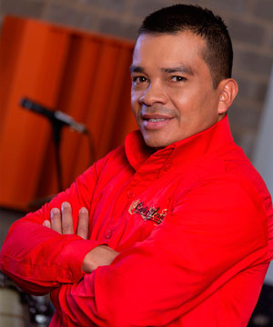

Café y Anís Orquesta
 @cafeyanisorquesta
@cafeyanisorquesta
 Café y Anís Orquesta
Café y Anís Orquesta
 Café y Anís Orquesta
Café y Anís Orquesta
Se prendió la fiesta, la mejor rumba crossover de la mano de excelentes músicos que dejan en el escenario cuerpo, alma y corazón.
Hace cinco años se conforma esta agrupación como una propuesta fresca e innovadora, rescatando la esencia principal de la evolución musical, más que una agrupación son una familia a la que le apasiona la música llevando un mensaje de total alegría y sabrosura, es un grupo tradicional tropical que busca el equilibrio entre los ritmos autóctonos y clásicos.
Algunos de sus integrantes principales son Nano Morales, cantante hace diez años quien ama la música y le apasiona el fútbol, Fernando Silva licenciado en música y vocalista de la orquesta, lleva quince años en esta profesión, Ana Maríavocalista hace trece años y Gustavo Castro manager de la orquesta, también hacen parte dos trompetas, dos saxofones, trombón, bajo, piano, guitarra, congas, timbales, batería, tambora dominicana, bongo y campana para un total de catorce músicos en tarima.
“Siempre estamos a la vanguardia de la nueva ola musical, tenemos un repertorio para todos los gustos siempre con el toque de Café y Anís Orquesta”
|
Fernando Silva |
 Gustavo Castro |
Nano Morales |
Ana María |
|---|
Con gran versatilidad y variedad buscan amenizar con un extenso repertorio desde merengue, salsa, vallenato y música tropical hasta divertidos show de reguetón, rock en español, carranga, entre otros.
Para lograr excelentes presentaciones la orquesta ensaya cada ocho días, con dos o tres temas específicos y preparan show cada quince días, adicional a esto los integrantes practican deporte porque aunque no lo crean es bastante exigente el bailar y cantar sobre el escenario por más de 6 o 7 horas.
Café y Anís Orquesta se proyecta como una de las mejores orquestas internacionales, con un trabajo serio y de calidad con un show que vale la pena mostrar.